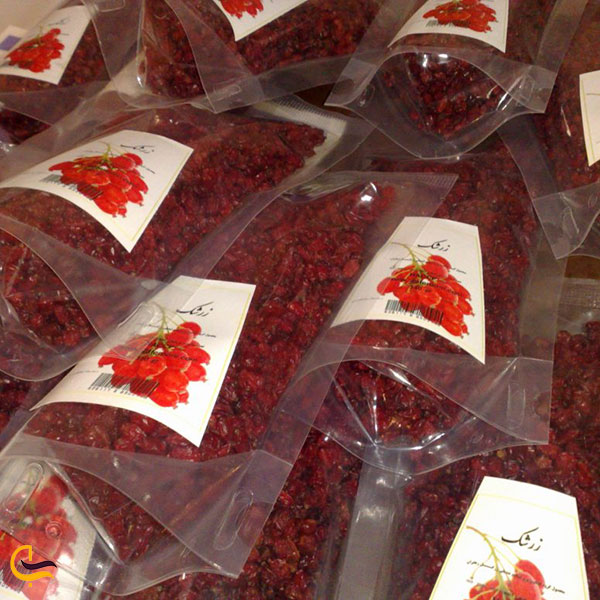
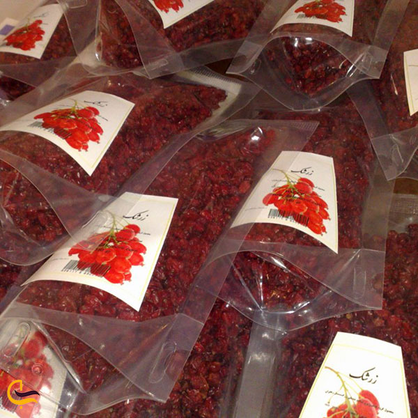
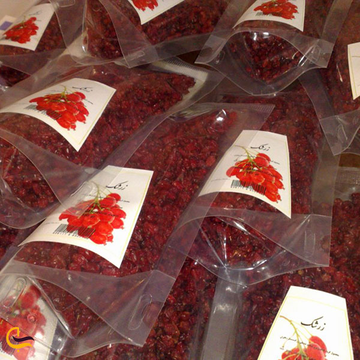

If we want to mention the famous souvenirs of Birjand, we can mention jujube, saffron and barberry.
Also, in the field of dairy products, we can mention curd and qaraqorut.
1.Jujube
One of the most famous souvenirs of Birjand is jujube. Many of you may not be aware that the best jujube in the country is produced in Birjand and surrounding cities and has an important share in the export sector. Its production season is late summer and early autumn. Jujube is one of those nuts that everyone likes and has many benefits. Among the properties of jujube, the following can be mentioned:2.Barberry
Apart from jujube, Birjand is also home to other small and red fruits; Barberry! South Khorasan province is the main producer of barberry in the world and in many parts of Birjand, you can see barberry seeds that shine on the bushes like rubies. If you go to Birjand, do not miss the opportunity to buy good quality barberries in this area, otherwise you will definitely regret it. Barberry packages are found in the homes of all of us Iranians, and how much better it would be for Barjand to be a souvenir of Birjand.

3.Saffron
If you are looking for fragrant souvenirs and you also want to spend more money to buy your souvenirs, Birjand saffron is a good choice for you. The saffron of this region is very high quality and its different and pleasant aroma will accompany you until the end of the trip. Birjand is one of the desert cities of our country and has a suitable climate for saffron cultivation; Therefore, many saffron fields can be seen in this city. If you are lucky, you may also see saffron fields on your trip to Birjand, which shine like a piece of purple cloth from afar. November is usually the harvest season for this expensive spice.4.Bukhara plum
Bukhara plum is one of the fruits that is mostly used dried. This delicious food is used in foods such as chicken, meatballs, plums, spinach stew and…, and gives the food a smooth taste. So, despite all these uses and the possibility of cooking all kinds of foods with Bukhara plums, it is better to prepare high-quality types of this product; And what better place than Birjand to buy quality prunes? Bukhara plum has small shrubs that can be seen in the villages of the central part and the middle part of Birjand and has caused the name of these delicious fruits to be among the souvenirs of Birjand.Other souvenirs of Birjand are: